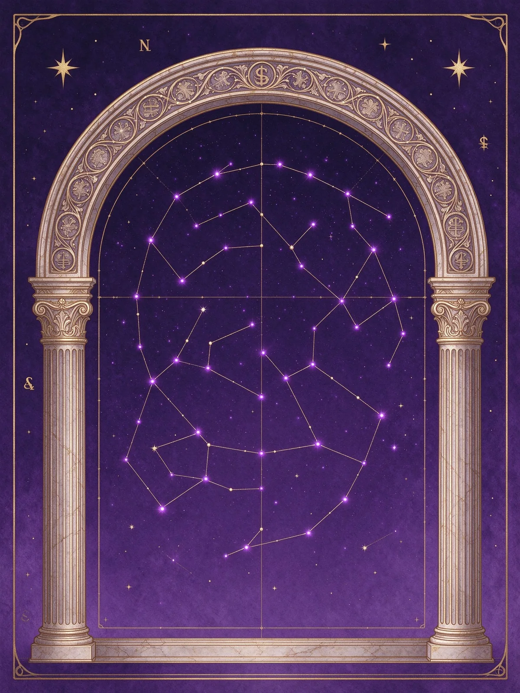
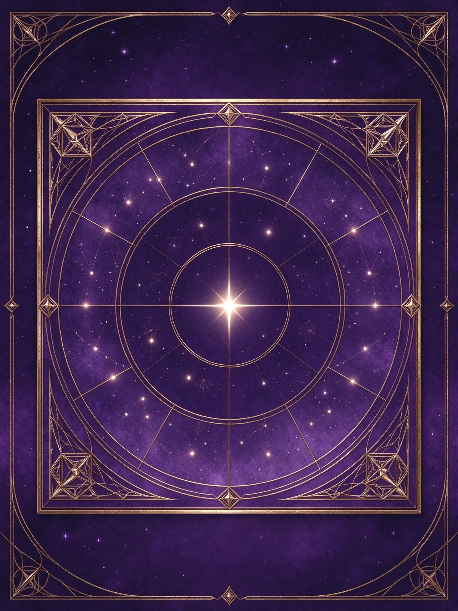
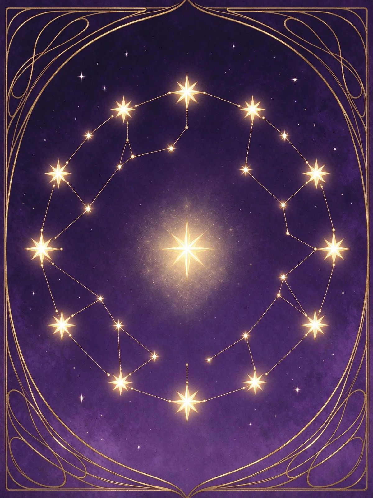
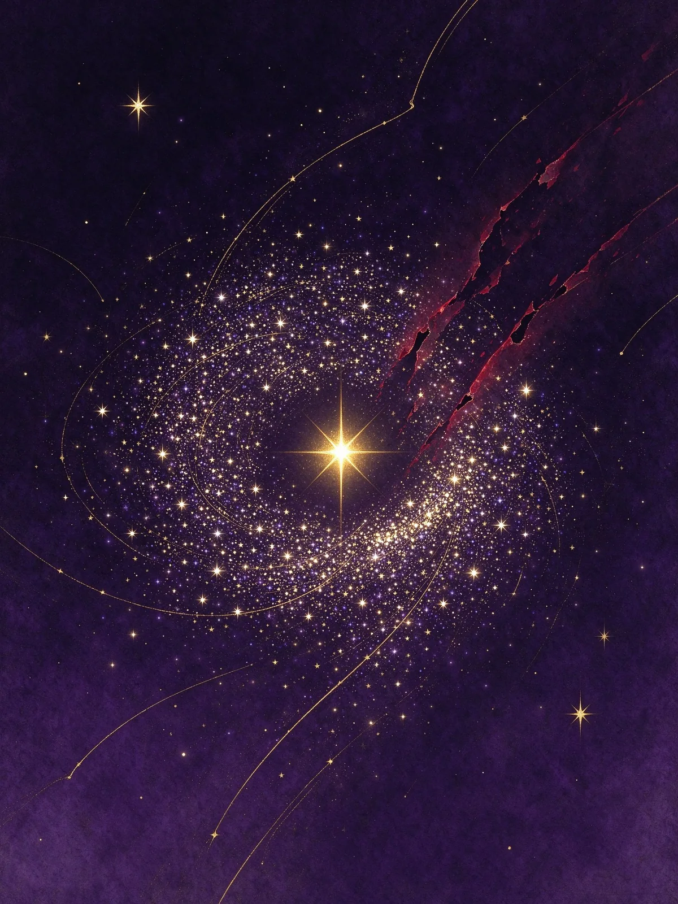
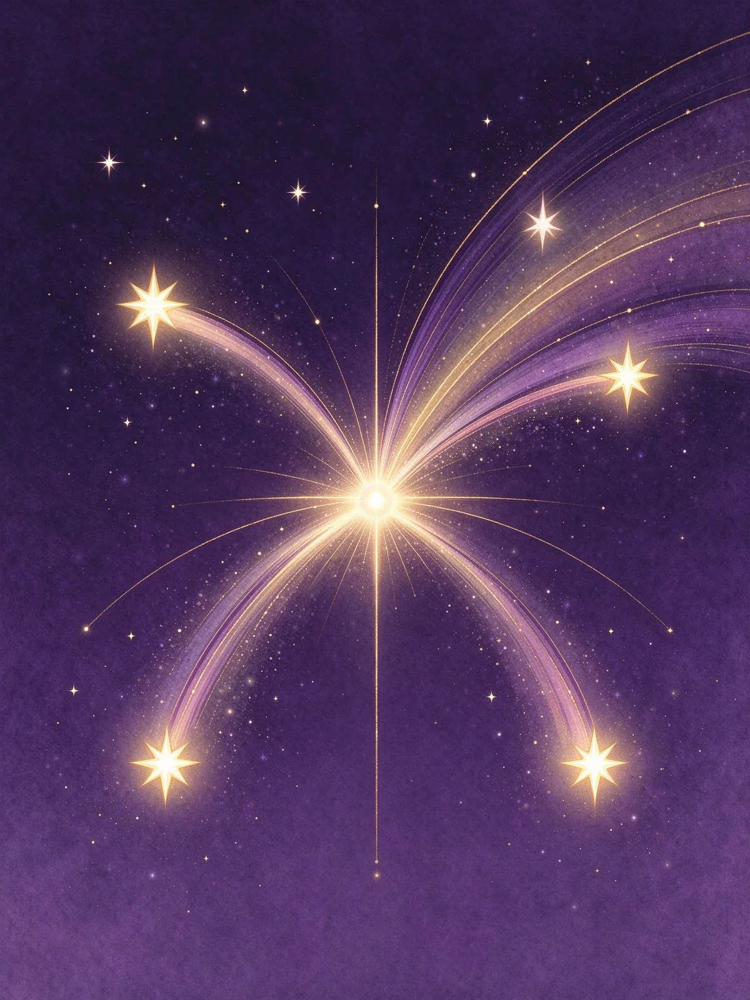
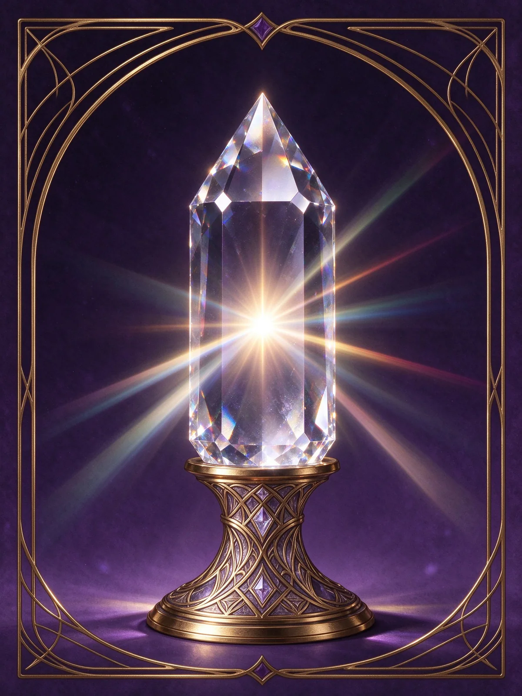
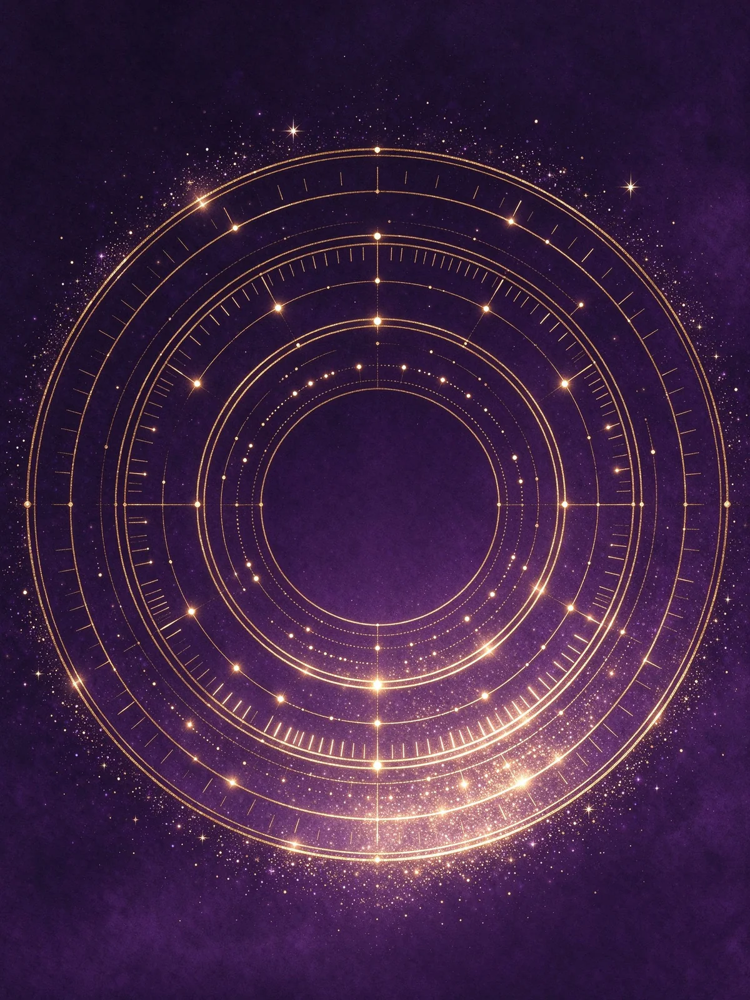
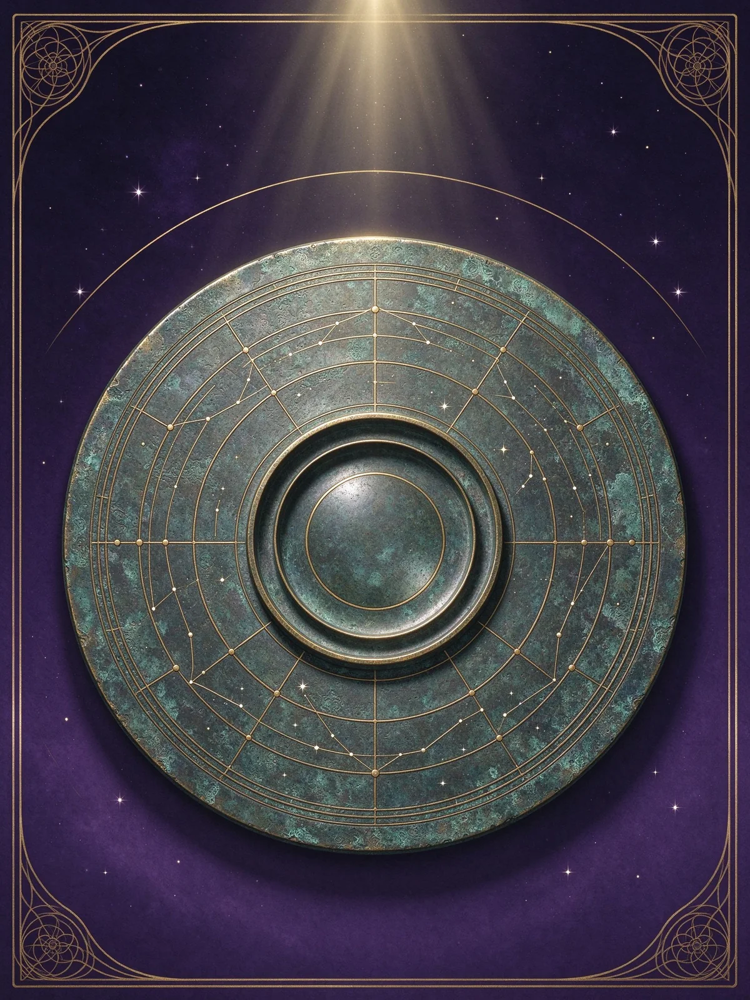
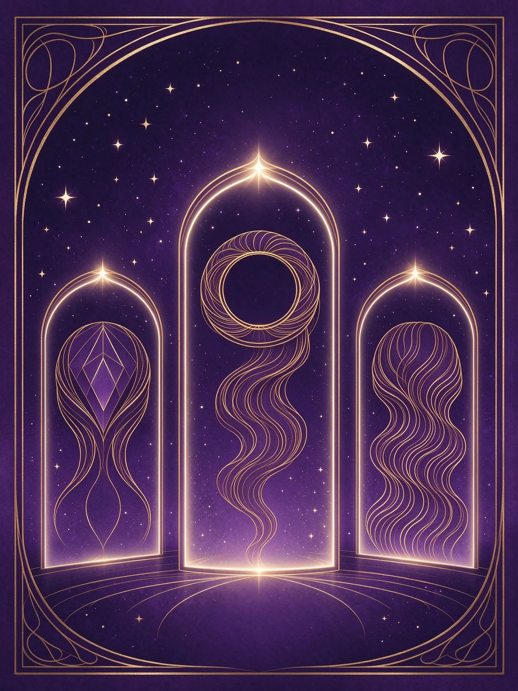
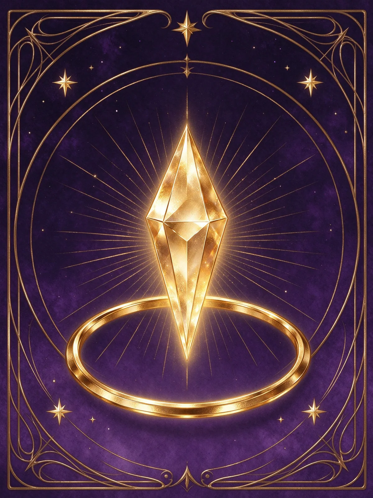

依照學習順序排列：先懂結構，再認星曜，最後練運限與專題。每一分類皆可用下拉選單篩選。

定義、源流、與八字占星的比較，以及十四主星與十二宮的整體架構。

十二宮怎麼排、三方四正怎麼看、身宮與命主身主代表什麼。

紫微星系六星、天府星系八星，逐星拆解星性、優缺點與落宮表現。

六吉、六煞、祿存天馬與桃花雜曜，決定順逆與細節的關鍵配角。

化祿、化權、化科、化忌與宮干飛化，讓命盤從靜態變成動態。

君臣慶會、紫府同宮、機月同梁、殺破狼，與破格成立的條件。

大限十年一宮、流年太歲落宮，看懂人生不同階段的主題。

安星十二步、定盤驗盤、十二時辰與真太陽時校正。

財運、事業、感情、親子、健康——不同問題要看不同宮位。
學完核心九類之後，這四區處理的是「逐宮拆解、查表、看真實命盤、解決實務疑問」。
十二個宮位固定在地支上，宮名從命宮起逆時針排列。下圖為盤面配置示意，實際星曜由生日與時辰決定。
從寅宮起正月順數到生月，再從生月起子時逆數到生時，得到命宮；身宮則順數。
由命宮的干支納音決定水二、木三、金四、土五、火六局，這是安紫微星的基準。
依局數與生日定紫微，再排紫微星系與天府星系；最後依年干布四化與祿存、羊陀。
每顆星都是一種性格原型。點進去可以看到星性、優缺點、落宮表現與四化後的變化。
紫微斗數不難，難在順序。照這個路線走，大約三個月可以自己看完一張盤。
先搞清楚十二宮、三方四正、身宮與命主身主。這個階段不需要記星，只需要知道「哪一格在管什麼」。
把十四主星當成十四種人：誰保守、誰衝動、誰愛面子、誰重享受。再補上六吉六煞的性質。
四化是動詞。化祿讓星曜變成資源，化忌讓星曜變成執著，這是整張盤開始「有劇情」的關鍵。
格局是星曜的固定組合，用來快速抓出結構重心。但要知道每個格局都有成立條件，不是名字好聽就好。
把大限與流年疊上本命盤，觀察同一個宮位在不同十年被放大或壓抑的差異。
用當事人的實際人生回推，確認生辰與時辰是否正確。定盤不準，後面全部白算。
不想從頭學，也可以依照你現在想問的問題，直接看那一條線。

財帛宮看賺錢方式，官祿宮看職業性向，田宅宮看資產累積。三宮加上三方四正才是完整的財官判斷。
夫妻宮看親密關係的模式與期待，子女宮看創造力與晚輩緣，父母宮看與長輩的互動。
疾厄宮看體質與壓力落點，福德宮看情緒與精神滿足。身心一起看，才不會只看到症狀。
同一個人生議題，不同系統會從不同角度觀照。